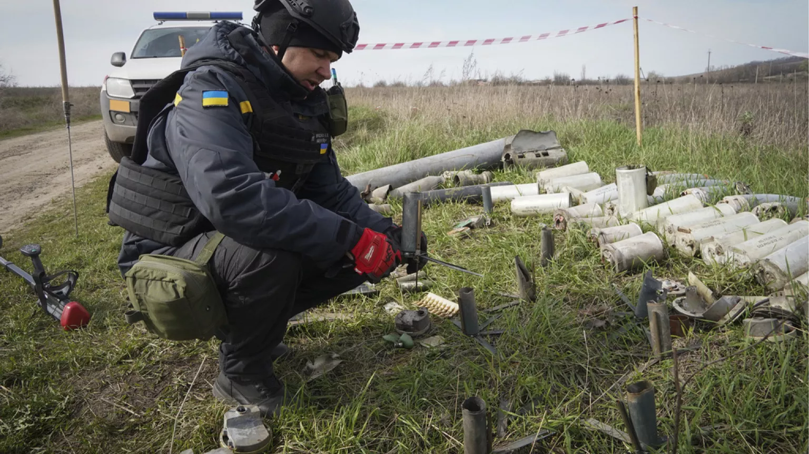
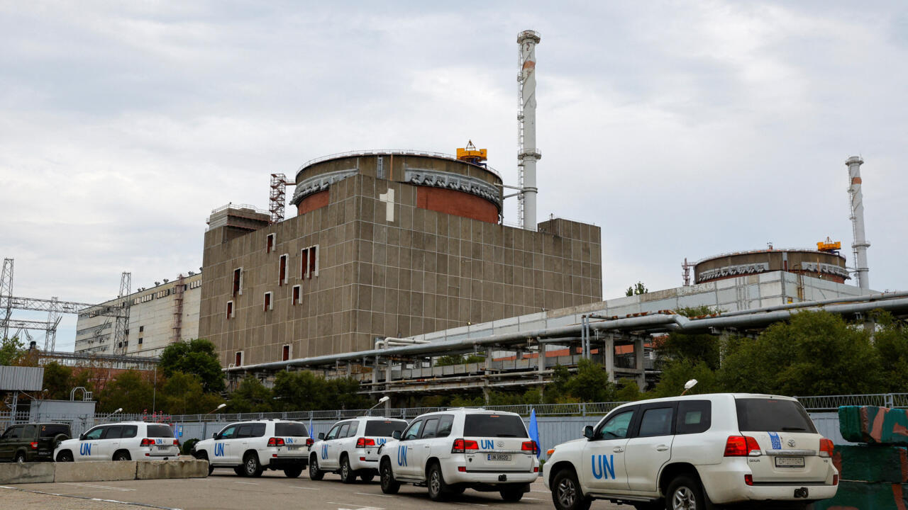

Nuestras Actividades
Vea el impacto de nuestro trabajo en toda Ucrania y cómo estamos marcando la diferencia en la vida de los afectados por el conflicto.
Actividades Recientes
Nuestros esfuerzos continuos para apoyar a las comunidades ucranianas





Apoye Nuestro Trabajo Continuo
Su contribución nos ayuda a continuar estas actividades cruciales en toda Ucrania. Únase a nosotros para marcar la diferencia para aquellos afectados por el conflicto.